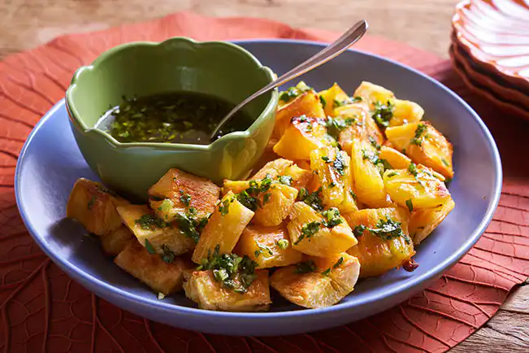
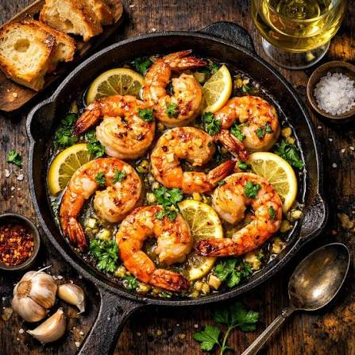
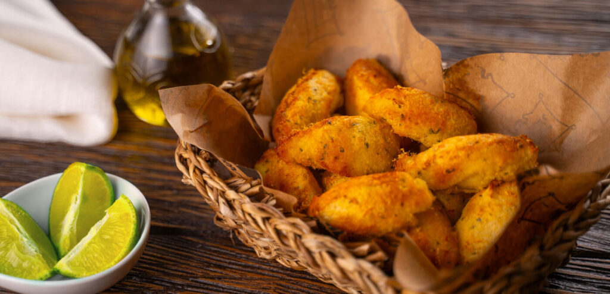
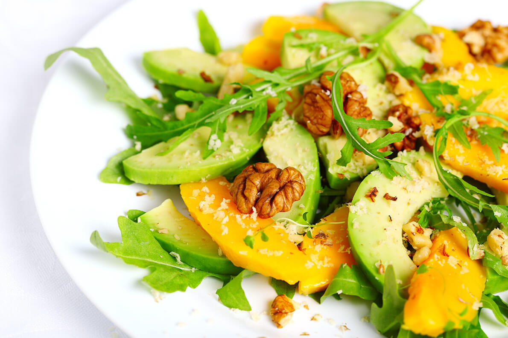
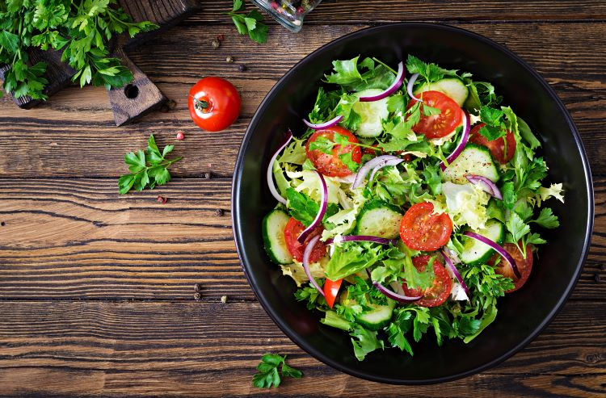

Para compartilhar
Petiscos, Tapas e Saladas
Sabores frescos e tropicais para acompanhar os drinks, dividir com a mesa e aproveitar a Barra da Tijuca.

Tapas24
Dadinhos de Tapioca
Crocantes por fora, macios por dentro, servidos com geleia de pimenta.

Petisco26
Mandioca Crocante
Porção dourada para compartilhar, com toque cítrico e ervas frescas.

Tapas42
Camarões ao Alho e Limão
Camarões salteados com alho, limão e ervas, em clima de praia.

Petisco28
Bolinho do Mar
Bolinho crocante de peixe com molho fresco da casa.

Salada32
Salada Tropical
Folhas frescas, manga e castanhas com vinagrete cítrico.

Salada29
Salada da Horta
Uma combinação leve de folhas, vegetais frescos, abacate e molho da casa.